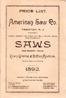
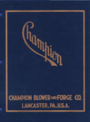

The Old Tool Reprint Room
Reprints: A-D
Some of the reprints listed here were re-created from damaged originals. Their covers and title pages may bear no relationship to the actual artifact. Others, especially those reprinted by Ken Roberts, have had additional pages of background information added to them. Conversely, some titles were not reproduced in their entirety in order to keep production costs down. The size of many reprints has no correlation to that of the original document.
Allen — A. B. Allen & Company
- Cover title: Illustrated Pages from the Catalog of Agricultural Implements Issued by A. B. Allen & Co., New York, N. Y., 1842.
- Title page: Catalogue of Agricultural and Horticultural Implements, and of Field and Garden Seeds, Fruit and Ornamental Trees, Domestic Animals, &c.
- 8th edition
- New York : A. B. Allen & Company, 1842.
- Reprinted: Long Island, New York : Early Trades & Crafts Society , 1989.
- Reprint is paperbound, 58 pages, 13.5 x 21.5 cm.
- Reprint includes only those pages dealing with tools and implements.
- Catalog includes agricultural tools, plows, cradles, scythes, mills shoves, seeders, shears, harrows etc.
Allen — R. J. Allen, Son & Company
- R. J. Allen, Son & Company: Tubular Lanterns, Street Lamps, &c., 115 Arch St., Philadelphia, Penn.
- Philadelphia, Pennsylvania : R. J. Allen, Son & Company, 1880?
- Reprinted: Early American Industries Association, 1978.
- Reprint is 1 sheet, 20 x 28 cm.
- Printed on two sides.
- Distributed to subscribers of the Chronicle of the Early American Industries Association.
- The source of the original (a periodical? a circular?) is unknown.
- Features lanterns and lamps with tubular frames.
- Information courtesy of Ken Bassett.
American Axe & Tool Company
{kind=link}
- Cover title: American Axe & Tool Co., New York, U.S.A.
- Title page: Illustrated Catalogue of the American Axe and Tool Co.
- New York: American Axe & Tool Company, 1894.
- Reprinted: Mid-West Tool Collectors Association and the Early American Industries Association, 1981.
- Reprint is paperbound, 136 pages, 20.5 x 27.5 cm.
- Reprint includes three-page company history by Charles H. Heavrin
- Catalog includes axes, hatchets, brick hammers, cleavers, turpentine hackers and dippers, bush hooks, bill hooks, grass hooks, hay knives, corn knives, etc.
American Saw Company

- Price List, American Saw Co., Trenton, N. J.: Manufacturers of Every Variety of Circular, Mill, Mulay, Gang and Cross-Cut Saws, Sawmakers' Tools, Emery Grinding and Buffing Machines, Mandrels, Swages and Wrenches.
- Trenton, New Jersey: American Saw Company, 1892.
- [Reprinted: Leesburg, Virginia: Nation Builder Books, 2008.]
- Reprint is paperbound, 32 pages, 17.5 x 25.5 cm.
- Catalog includes circular saws and blade inserts, ice saws, one and two-man crosscut saws, swages, circular saw mandrels; wrenches, a gummer, grinding and buffing heads, saw makers' hammers and anvils and a hand-screw press for saw work. Includes prices for grooving saws, shingle saws, top saws for double mills, cast iron saw flanges, concave saws, mulay saws, gang saws, butting or drag saws, lance tooth drag saws, circular saws and discs for cutting hot or cold iron, circular miter saws, and milling saws for metal. One page includes a table of “Rates for Repairing Circular Saws.”
American Waltham Watch Company
{kind=link}
- Cover title: Net Price List: American Waltham Watch Co's Materials.
- Title page: American Waltham Watch Co's 1885 Trade Catalogue with Price List: Materials.
- Waltham, Massachusetts: American Waltham Watch Company, 1885.
- Reprinted: Bristol Connecticut: Ken Roberts Publishing Company, 1972. (ISBN 0-9600264-2-8)
- Reprint is paperbound, 112 pages, 14 x 21.5 cm.
- A catalog of parts for watches.
American Watch Company
- American Watch Co., Waltham Massachusetts, Incorporated 1854: New Orleans Exposition, 1884-85.
- Waltham, Massachusetts: American Watch Company, ca. 1884.
- Reprinted: Bristol Connecticut: Ken Roberts Publishing Company, 1972. (ISBN 0-9600264-4-4)
- Reprint is paperbound, 36 pages, 14 x 21.5 cm.
- A booklet, distributed at the 1884-85 New Orleans World's Fair, containing much information about the operations of the American Watch Company and numerous advertisements for businesses related to the clock-making trade.
American Watch Tool Company
- Precision Machinery
- Waltham, Massachusetts: American Watch Tool Company, ca. 1890.
- Reprinted: Fitzwilliam, New Hampshire : Ken Roberts Publishing Company, 1980.
- Reprint is paperbound, 30 pages, 22 cm.
- Item not seen
Appleton's Cyclopedia
- Spine title: Appletons' Cyclopaedia of Applied Mechanics: a Dictionary of Mechanical Engineering and the Mechanical Arts
- Title page: Appletons' Cyclopaedia of Applied Mechanics: a Dictionary of Mechanical Engineering and the Mechanical Arts, Illustrated with Nearly Five Thousand Engravings
- New York : D. Appleton & Company, 1880.
- Reprinted: Mid-West Tool Collectors Association and Early American Industries Association, 1982.
- Hardbound, 2 volumes, 26 cm.
- Reprinted as part of a three volume set (with matching bindings) that includes Appleton's Modern Mechanism.
- A mechanical dictionary.
- Spine title: Appletons' Cyclopaedia of Applied Mechanics: Modern Mechanism
- Title page: Modern Mechanism: Exhibiting the Latest Progress in Machines, Motors, and the Transmission of Power, Being a Supplement Volume to Appletons' Cyclopaedia of Applied Mechanics
- New York : D. Appleton & Company, 1897
- Reprinted. Mid-West Tool Collectors Association and Early American Industries Association, 1982.
- Hardbound, 959 pages, 26 cm.
- Reprinted as part of a three volume set (with matching bindings) that includes Appleton's Cyclopedia of Applied Mechanics.
- A mechanical dictionary.
Arrowmammett Works
- Cover title: Illustrated Supplement to the Catalogue and Invoice Price List of Bench Planes, Moulding Tools &c.: Manufactured at the Arrowmammett Works, Middletown, Conn.
- Title page: Catalogue and Invoice Price List of Bench Planes, and Moulding Tools, Also, a List of Boy's and Gentlemen's Tool Chests: Manufactured and for Sale at the Arrowmammett Works, Middletown, Conn.
- Middletown, Connecticut : Arrowmammett Works, 1857 & 1858.
- Reprinted: Fitzwilliam, New Hampshire : Ken Roberts Publishing Company, 1976. (ISBN 0-913602-20-5)
- Reprint is paperbound, 52 pages, 14 x 21.5 cm.
- Reprint contains both the 1857 catalog supplement and the 1858 catalog. The two publications are interleaved.
- Arrowmammett Works was a brand of the Baldwin Tool Company.
- Catalog includes wooden planes, plane irons and tool chests
Arthur—Henry Arthur

- Price List for September 1st, 1874 of Leather and Findings and Boot & Shoe Uppers: Henry Arthur.
- New York : Henry Arthur, 1874.
- Reprinted: Stockton, New Jersey : Alexander Farnham, ca. 1975
- Reprint is paperbound, 48 pages, 14 x 20.5 cm.
- Catalog includes such cobblers' tools as creasers, stitching wheels, heel shaves, splitters, sewing hafts, eyelet sets, punches, etc. and footwear components such as leather and boot, shoe, and gaiter uppers.
- Information courtesy of Chuck Guilford.
Astragal Press
- The Handsaw Catalog Collection: a Select Compilation of the Four Leading Manufacturers (1910-1919).
- Mendham, New Jersey : Astragal Press, 1994. (ISBN 1-879335-44-1)
- Paperbound, 122 pages, 18 x 25.5 cm.
- Contain the handsaw sections from four larger catalogs.
- Includes the handsaw section from the 1919 E. C. Atkins & Company catalog
- Includes the handsaw section from the 1918 Henry Disston & Sons catalog
- Includes the handsaw section from the 1910 Simonds Manufacturing Company catalog
- Includes the handsaw section from the 1915 Spear & Jackson catalog
Atha Tool Company

- Cover title: Atha Tool Company: 1883
- Title page: Price List of Steel Tools Manufactured by the Atha Tool Co., Newark, N. J.
- Newark, New Jersey : Atha Tool Company, 1883.
- Reprinted: Bud Brown Publishing Company, 1990?
- Reprint is paperbound, 60 pages, 16.5 X 26 cm.
- Catalog includes hammers, farrier's tools, blacksmith's tools, railroad tools, vises, hatchets, axes, dividers, compasses, calipers, saw sets, trowels, cleavers, bush hooks, etc.
Atkins — E. C. Atkins & Company
{kind=link}
- 1898
- E. C. Atkins & Company
- Cover title: E. C. Atkins & Co., Sheffield Saw Works: Manufacturers of Saws, Saw Tools, and Mill Specialties
- Title page: E. C. Atkins & Co., Sheffield Saw Works: Manufacturers of Circular, Cross-Cut, Hand, Wood, Band, Gang, Mill and Other Saws
- Indianapolis, Indiana : E. C. Atkins & Company, 1898.
- Reprinted: Mid-West Tool Collectors Association, 2017.
- Reprint is paperbound, 128 pages, 15.5 x 23 cm.
- Reprint lacks pages 129-130 of the original catalog.
- Includes saws, saw doctor and saw sharpening tools, and slaw cutters.
- 1919
- E. C. Atkins & Company
- E. C. Atkins & Co. : Saws, Saw Tools, Mill Specialties, No. 18
- Indianapolis, Indiana : E. C. Atkins & Company, 1919.
- Handsaw section of this catalog has been reprinted in: The Handsaw Catalog Collection (Astragal Press)
- ca. 1920
- Saw Sense
- Indianapolis, Indiana : E. C. Atkins & Company, ca. 1920.
- Reprinted: Southwest Tool Collectors Association, 1982.
- Reprint is paperbound, 24 pages, 9 x 15.5 cm.
- Not a catalog, but a pocket guide to Atkins saws
- Includes a short guide to filing saws, tips on framing roofs, shingling, estimating plaster covers, and a chart detailing the number of various sizes of nails per pound
{kind=link}
- 1923
- E. C. Atkins & Company
- Cover title: E. C. Atkins & Company: Saws, Saw Tools, and Machine Knives
- Original title page: E. C. Atkins & Company: Saws, Saw Tools, and Machine Knives, No. 19
- Indianapolis, Indiana : E. C. Atkins & Company, 1923.
- Reprinted: Time Tested Tools, 2019. (ISBN 978-0359513697)
- Reprint is paperbound, 272 pages, 15.5 x 23 cm.
- Includes mill, hand and hack saws, saw doctor and saw sharpening tools, and machine knives of the type used by cooperages, leather goods manufacturers, and woodworking enterprises.
Auburn Tool Company
- Cover title: 1869 Price List of Planes, Plane Irons, Rules, Gauges, Hand Screws &c. Manufactured and Sold by Auburn Tool Company, (Successors to Casey, Clark & Co.)
- Title page: Catalogue and Price List of Planes, Plane Irons, Rules, Gauges, Hand Screws &c. Manufactured and Sold by Auburn Tool Company, (Successors to Casey, Clark & Co.)
- Auburn, New York : Auburn Tool Company, 1869.
- Reprinted: Fitzwilliam, New Hampshire : Ken Roberts Publishing Company, 1983. (ISBN 0-913602-56-6)
- Reprint is paperbound, 24 pages, 14 x 21.5 cm.
- Includes a 2-page historical note by Ken Roberts.
- Catalog includes wooden planes, rules, gauges and hand screws
Bailey — Leonard Bailey and Company

- 1876
- Cover title: Leonard Bailey & Co.'s Illustrated Catalogue and Price list of Patent Adjustable Iron Bench Planes, Try Squares, Bevels, Rules, Levels, Hammers &c., &c.
- Title page: Leonard Bailey & Co.'s Patent Adjustable Iron Bench Planes, Try Squares and Bevels: Manufactured by L. Bailey & Co., Hartford Conn.
- Hartford, Connecticut : L. Bailey and Company, 1876.
- Reprinted: Ken Roberts Publishing, 1991. (ISBN 0-913602-42-6)
- Reprint is paperbound, 50 pages, 10 x 15.5 cm.
- Reprint includes an additional 22 pages of content compiled by Ken Roberts.
- Price list includes Victor bench planes, Stratton Brothers levels, squares, bevels, etc.
- Information courtesy of Chuck Guilford.
- Has also been reprinted in: The Stanley Catalog Collection. Volume II
- 1883
- Leonard Bailey & Co.'s Patent Adjustable Iron Bench Planes, Try Squares, Levels, Spoke Shaves, Box Scrapers &c.
- Hartford, Connecticut : L. Bailey and Company, 1883.
- Reprinted: Fitzwilliam, New Hampshire : Ken Roberts Publishing, 1975. (ISBN 0-913602-13-4)
- Reprint is paperbound, 12 pages, 10.5 x 16.5 cm.
- Reprint includes additional 2 pages of content compiled by Ken Roberts.
- Price list includes Victor bench planes, bevels, spoke shaves, scrapers, etc.
- Information courtesy of Chuck Guilford.
- Has also been reprinted in: The Stanley Catalog Collection. Volume II
Bailey Wringing Machine Company
- Defiance Metallic Bench Planes: Bailey Wringing Machine Company
- New York: Bailey Wringing Machine Company, 1876.
- Reprinted: Kendall Bassett, ca. 1985.
- Single sheet folded to 8.5 x 15.5 cm.
- Price list for Leonard Bailey's metallic planes, spoke shaves, box scrapers, etc.
- Baldwin Tool Company
- See Arrowmammett Works
Barnes — W. F. & John Barnes Company
- ca. 1882
- Title, front: Barnes' Patent Foot and Hand Power Machinery: Contractors' and Builders' Outfit
- Title, reverse: Barnes' Patent Foot-Power Machinery: Contractors' and Builders' Outfit
- Rockford, Illinois : W. F. & John Barnes Company, ca. 1882.
- Reprinted: Lancaster, Massachusetts: Roger K. Smith, 1976.
- Reprint consists of single sheet, printed on both sides, 61 x 46 cm.
- Reproduction of a circular promoting Barnes' products to builders and contractors.
- Illustrations include interior of Barnes factory, rip saw, scroll saw, forming machine, mortising machine, tenoning machine, lathe and miscellaneous examples of products manufactured with them.
- 1896
- Cover title: W. F. & John Barnes Company, Rockford Illinois, U.S.A.: Metal Working Machinery
- Title page: Price List and Descriptive Catalogue, Barnes' Metal Working Machinery: Foot and Steam Power.
- Back cover: Catalogue No. 43, March 1, 1896.
- Rockford, Illinois : W. F. & John Barnes Company, 1896.
- Reprinted: Brinklow, Md.: Alexander J. Hill Publishing, 1982.
- Reprint is paperbound, 46 pages, 15 x 23 cm.
- Reprint includes a three-page history of the company not found in the original.
- Catalog includes foot-powered lathes, drill presses, chucks and other accessories.
- 1903
- Cover title: Foot Power Lathes Manufactured by W. F. & John Barnes Company, Rockford Illinois, U.S.A.: Catalogue No. 59
- Title page: Price List and Descriptive Catalogue: Barnes' Lathes
- Rockford, Illinois : W. F. & John Barnes Company, 1903.
- Reprinted: Mid-West Tool Collectors Association, 1982.
- Reprint is paperbound, 31 pages, 15 x 23.5 cm.
- Catalog includes foot-powered lathes
- 1907
- Cover title: Patent Foot and Hand Power Wood Working Machinery Manufactured by W. F. & John Barnes Company, Rockford Illinois, U.S.A.: Catalogue No. 67
- Title page: Price List and Descriptive Catalogue: Barnes' Patent Foot and Hand Power Wood Working Machinery
- Rockford, Illinois : W. F. & John Barnes Company, 1907.
- Reprinted: Mid-West Tool Collectors Association (M-WTCA), 1978.
- Reprinted: Time Tested Tools, 2019. (ISBN 978-1090845399)
- M-WTCA reprint is paperbound, 40 pages, 14 x 21 cm.
- Time Tested Tools reprint is paperbound, 43 pages, 15.4 x 23 cm.
- Catalog includes scroll saws, circular saws, foot-powered lathes, mortising machine, a tenoning machine, etc.
{kind=link}
- 1921
- Cover title: Lathes Manufactured by W. F. & John Barnes Company, Rockford Illinois, U.S.A.: Catalogue No. 85
- Title page: Barnes' Lathes: Price List and Descriptive Catalogue
- Rockford, Illinois : W. F. & John Barnes Company, 1921.
- Reprinted: Time Tested Tools, 2019. (978-1091834316)
- Reprint is paperbound, 35 pages, 15.4 x 23.5 cm.
- Catalog features foot-powered lathes.
Barton—D. R. Barton & Company
- 1873
- Cover title: Mechanics' Tools: Illustrated Catalog, D. R. Barton & Co.
- Title Page: Catalogue and Revised Standard List of Mechanics' Tools and Machine Knives: Manufactured by D. R. Barton & Co., 136 Mill Street, Rochester, N. Y.
- Rochester, New York : D. R. Barton & Company, 1873.
- Reprinted: Fitzwilliam, New Hampshire : Ken Roberts Publishing Company, 1983. (ISBN 0-913602-55-8)
- Reprint is paperbound, 64 and 12 pages in two series, 22 cm.
- Reprint includes historical notes, memorial to D. R. Barton, 1928 price list to carving tools for the Mack tool company, D. R. Barton & Co.'s successor
- Reprint shipped with unattached 4-page insert featuring a brief biography and obituary of Dr. R. Barton (discovered after copy was sent to the printer)
- Catalog includes wooden planes, chisels, gouges, draw knives, coopers' tools, hatchets, axes, gauges, augers, tinners' tools, etc.
- ca. 1894
- Price List of Genuine "D. R. Barton" Planes, Edge Tools, &c.: Made Only by Mack & Co. 18 Brown's Race, Rochester, N. Y.
- Rochester, New York: Mack & Company, ca. 1894.
- Reprinted: Portville, N. Y.: Putnam Tool Museum, 1969.
- Distributed: Collector's Door (Gerry Hiatt): Noblesville, Indiana.
- Reprint is paperbound, 15 x 22.5 cm.
- Reprint shipped with unattached 1-page insert featuring an introductory letter from Mack & Co.
- Catalog includes wooden planes, chisels, gouges, draw knives, hatchets, axes, augers, etc.
- Information courtesy of Chuck Guilford
Belcher Brothers & Company
- Belcher Brothers & Co.'s Price List of Boxwood & Ivory Rules: For Sale Only by Wm. Belcher
- New York : Belcher Brothers & Company, 1860.
- Reprinted: Fitzwilliam, New Hampshire : Ken Roberts Publishing Company, 1982. (ISBN 0-913602-51-5)
- Reprint is paperbound, 42 pages, 114 x 21.5 cm.
- Reprint contains 3 pages of historical content not present in original.
- Catalog contains rules, tapes, gauges, squares, etc.
Berger — C. L. Berger & Sons
{kind=link}
- Cover title: Hand-Book and Illustrated Catalogue of the of the Engineers and Surveyors' Instruments of Precision: Made by C. L Berger & Sons, Successors to Buff & Berger
- Title page: Hand-Book and Illustrated Catalogue of the of the Engineers and Surveyors' Instruments of Precision: Made by C. L Berger & Sons, 1900
- Boston Massachusetts : C. L. Berger, 1900.
- Reprinted: Mendham, New Jersey : Astragal Press, 1993. (ISBN 1-879335-33-6)
- Reprint is paperbound, 210 pages, 26 cm.
- Includes a two-page introduction by David C. Garcelon.
- More than a catalog, the first one hundred nineteen pages of this book are a primer on the techniques and instruments used in surveying. Featured in the catalog section are transits, tapes, surveyor's chains, compasses, leveling rods, pantographs, planimeters and telescopes.
- An 1895 catalog of Buff & Berger, a predecessor firm, has also been reprinted.
Birmingham Plane Manufacturing Company
- The Birmingham Plane Mfg. Co.: Manufacturers of Planes and Hardware Specialties
- Birmingham, Connecticut : Birmingham Plane Mfg. Co., ca. 1885.
- Reprinted: Martin J. Donnelly Antique Tools, reprint date uncertain.
- Single sheet folded to 8.5 x 15.5 cm.
- Price list of metallic planes and spoke shaves.
- Information is courtesy Chuck Guilford.
Bliss — R. Bliss Manufacturing Company
- Cover title: Catalogue: R. Bliss Manufacturing Co., Pawtucket, R. I., Fall, 1889.
- Title page: Fall Catalogue of the R. Bliss Mfg. Co., Pawtucket, R. I., 1889.
- Pawtucket, Rhode Island: R. Bliss Manufacturing, 1876.
- Reprinted: Antique Toy Collectors of America, 1972.
- Reprint is paperbound, 36 pages, 14.5 x 23.5 cm.
- Includes six pages of boys and gentlemen's tool chests—most containing tools.
- Information is courtesy Chuck Guilford.
Bradley — G. W. Bradley Edge Tool Factory
- G. W. Bradley's Edge Tools: Price List, Spanish Tools, Coopers' Tools, Carpenters' Tools, Farmers' Tools, Garden Tools, 1876
- New York : G. W. Bradley, 1876.
- Reprinted: Antique Tools and Trades in Connecticut (A.T.T.I.C.), ca. 1976.
- Reprint is paperbound, 16 pages, 25 cm.
- Item not seen.
Bridgeport Hardware Manufacturing Corporation
- Cover title: The Bridgeport Line: Catalogue No. 23
- Title page: The Bridgeport Hardware Manufacturing Corporation, Bridgeport, Conn. U.S.A.: Manufacturers of High grade Tools and Hardware specialties, Catalogue No. 23, 1925
- Bridgeport, Connecticut : Bridgeport Hardware Manufacturing Company, 1925.
- Reprinted: Antique Tools and Trades in Connecticut (A.T.T.I.C.), 2004.
- Reprint is paperbound, 83 pages, 14.5 x 21.5, cm.
- Catalog includes awls, box chisels, box openers, box scrapers, can openers, hammers, hatchets, ice picks, nail pullers, pliers, putty knives, hack saws, screwdrivers, tire tools, trowels, etc.
- Britannia Company
- See Lukin, James
Brombacher — A. F. Brombacher & Company
{kind=link}
- 1912
- Tools for Coopers and Gaugers, Produce Triers: A. F. Brombacher & Co., Catalogue No. 15, 1912
- New York : A. F. Brombacher & Company, 1912.
- Reprinted: Time Tested Tools, 2019. (ISBN 978-1091282384)
- Reprint is paperbound, 32 pages, 15.5 x 23 cm.
- While the cover correctly states the publicaton date of the original catalog as 1912, the publisher-created title page of at least some reprints erroneously refers to it it as 1922.
- Includes instructions on using gauge and wantage rods.
- Catalog includes such cooper's tools as adzes, axes, hatchets, draw knives, chamfering knives, hoop drivers, shaves, bung hole borers, crozes, howells, floats, planes, wantage rods, gauges, shears, punches, truss hoops, etc.
- 1922
- Tools for Coopers and Gaugers, Produce Triers: A. F. Brombacher & Co., Catalogue No. 20
- New York : A. F. Brombacher & Company, 1922.
- Reprint distributed by the Collectors Bookshelf, Noblesville, Indiana (1980?)
- Reprint is paperbound, 36 pages, 14 x 21 cm.
- Catalog includes such cooper's tools as adzes, axes, hatchets, draw knives, chamfering knives, hoop drivers, chime mauls, shaves, bung hole borers, crozes, howells, floats, planes, wantage rods, gauges, truss hoops, etc.
Brown & Sharpe
- 1887
- Catalogue and Price Lists of Brown & Sharpe Mfg. Co., Providence, Rhode Island, United States: Manufacturers of Fine castings, Sewing Machines, Patent Articles, Universal and Plain Milling Machines, Grinding, Screw, and Tapping Machines, Screw Finishing and Polishing Machines ...
- Providence, Rhode Island : Brown & Sharpe, 1887.
- Reprinted in: A Brown & Sharpe Catalogue Collection
- 1899
- Catalogue No. 101 and Price Lists of Machinists' Tools, Rules, Squares, Micrometer Calipers, Gauges and Accurate Test Tools Made by Brown & Sharpe Mfg. Co., Providence, R. I., U.S.A.
- Providence, Rhode Island : Brown & Sharpe,, 1899.
- Reprinted in: A Brown & Sharpe Catalogue Collection
- 1902
- Cover title: The Micrometer's Story: 1867-1902
- Title page: The Micrometer's Story
- Providence, Rhode Island. : Brown & Sharpe Manufacturing Company, 1902.
- Reprinted: Bath, New York : Martin J. Donnelly Antique Tools, ca. 1994.
- Reprint is paperbound, 16 pages, 8.5 x 15 cm.
- A promotional pamphlet detailing Brown & Sharpe's role in the history of the micrometer
- various dates
- A Brown & Sharpe Catalogue Collection: 1868, 1887, 1899
- Mendham, New Jersey : Astragal Press, 1997. (ISBN 1-879335-76-X)
- Introduction by Kenneth L. Cope.
- Paperbound, 282 pages, 15 x 23 cm.
- A reprint three catalogs: one by Darling Brown & Sharpe (1868) and two by Brown & Sharpe (1887 & 1899), compiled and published by the Astragal Press.
Buck & Hickman, Ltd.
- Cover title: American Tools: Buck & Hickman Limited
- Title page: Illustrated and Priced Catalogue of American Tools: Twist Drills, Chucks, Vices, &c., &c.
- London : Buck & Hickman, Ltd., 1902
- Reprinted: Mid-West Tool Collectors Association, 1989
- Reprint is paperbound, 269 pages, 21.5 x 28 cm.
- Catalogs of a London hardware house that features American made machinist's tools, saws, planes, axes, braces, drills, bits, Davis levels, pulleys, horse clippers, oil cans, saws, chisels, etc.
Buck Brothers
- ca. 1890
- Buck Brothers, Millbury, Mass., Manufacturers of Chisels, Gouges, Plane Irons and Other Light Edge Tools ...
- Millbury, Massachusetts : Buck Brothers, ca. 1890.
- Reprinted: Lancaster, Massachusetts: Roger K. Smith, 1981.
- Reprint consists of one broadside sheet, 34 x 51 cm.
- Pictured are chisels, gouges, punches, screwdrivers, handles, plane irons, reamers, countersinks, etc.
- 1890
- Price List of Chisels, Plane irons, Gouges, Carving Tools, Nail sets, Screw drivers, Handles, &c. Manufactured by Buck Brothers, Riverlin Works, Millbury, Mass., Formerly of Sheffield, England
- Millbury, Massachusetts : Buck Brothers, 1890.
- Reprinted: Fitzwilliam, New Hampshire : Ken Roberts Publishing Company, 1976. (ISBN 0-913602-19-1)
- Reprinted: Mendham, New Jersey : Astragal Press, ca. 1991. (ISBN 1-879335-07-7)
- Reprint is paperbound, 128 pages, 14 x 21.5 cm.
- The Roberts reprint contains seven pages of content not present in the original publication.
- Astragal reprint includes one-page history of Buck Bros. based on notes by Ken Roberts.
- Catalog includes slicks, plane irons, gouges, chisels, carving tools, draw knives, reamers, awls, screwdrivers, nail sets, etc.
Buff & Berger
- Hand-book and Illustrated Catalogue of the Engineers' and Surveyors' Instruments Made by Buff & Berger
- Boston, Massachusetts : Buff & Berger, 1897.
- Reprinted: Mid-West Tool Collectors Association, 2004.
- Reprint is paperbound, 150 pages, 15 x 23 cm.
- More than a catalog, the first ninety-three pages of this book are a primer on the techniques and instruments used in surveying. Featured in the catalog section are transits, tapes, surveyor's chains, compasses, leveling rods, pantographs, planimeters and telescopes.
- A 1900 catalog of C. L. Berger & Sons, a successor firm, has also been reprinted.
Buffum Tool Company
{kind=link}
- Cover title: Buffum Tool Co. Manufacturers, Louisiana, Mo. U. S. A.: Automobile and Engineers Tools
- Title Page: General Catalog No. 2: Buffum Tool Co.
- Louisiana, Missouri : Buffum Tool Co., copyright 1912.
- Reprinted: Florissant, Missouri : George Braun, 2006.
- Reprint is paperbound, 96 pages, 10.5 x 16.5 cm.
- The company's use of the hooked cross trademark predates the symbol's adoption by Germany's Nazi Party.
- Includes cold chisels, punches, hammers, wrenches, clamps, pliers, bearing scrapers, boat caulking irons, etc.
- C. Drew & Company
- See Drew — C. Drew & Company
- C. Hammond & Son
- See Hammond — C. Hammond & Son
- C. E. Jennings & Company
- See Jennings — C. E. Jennings & Company
Canedy-Otto Manufacturing Company
{kind=link}
- Cover title: Forges, Blowers, Drills, Punches, Shears, Shrinkers
- Chicago Heights, Illinois: Canedy-Otto Manufacturing Company, 1910?
- Canedy-Otto's price list no. 11.
- Reprinted: Hotemper Publishing, 2001.
- Reprint is 188 pages, 13 x 19 cm.
- Includes blacksmithing tools, post and bench drills forges and arbor presses
- Item not seen.
Carr — William H. Carr & Company
- American Manufactured Hardware &c. for Sale by Wm. H. Carr & Co., Commerce Street, Philadelphia
- Philadelphia, Pennsylvania: William H. Carr & Company, 1838.
- Reprinted: Early American Industries Association, 1972.
- Reprint is paperbound, 32 pages, 21 cm.
- A very early un-illustrated catalog contains listings of tools manufactured by Moses Bates, John Beatty, Deep River Manufacturing, the Douglas Axe Manufacturing Company, Asa Richardson, Increase Wilson, S. C. Bemis and others.
Champion Blower and Forge Co.
{kind=link}
- 1907
- Cover title: Champion Blower & Forge Co. Lancaster PA. USA 1907
- Original title page: Our Illustrated Catalogue of the Champion Steel Blower and Steel Forges, Lever and Crank Blowers, Portable Forges ...
- Lancaster, Pennsylvania: Champion Blower and Forge Company, 1907.
- Reprinted: Time Tested Tools, 2019. (ISBN 978-1700504302)
- Reprint is 232 pages, 20.5 x 25.5 cm.
- Catalog contains: blowers, forges, blacksmith drills, tire benders, screw plates, taps and dies, tire and axle shrinkers and welders, steel pressure blowers, fan blowers, exhaust fans, disc wheels, and more.

- 1935
- Cover title: Champion: Champion Blower and Forge Co., Lancaster Pa., U.S.A.
- Title page: Catalogue No. 56: Illustrated Catalog of "Champion" Blowers, Band Saws, ...
- January 1935 edition
- Lancaster, Pennsylvania: Champion Blower and Forge Company, 1935.
- Reprinted: Leesburg, Virginia: Nation Builder Books, 2010.
- Reprint is 124 pages, 21.5 x 28 cm.
- Includes two added sections: Net Selling Price Applying to No. 56 Catalog, January 1935 Edition and Net Selling Prices Applying to No. 65 Catalog, Effective June 1, 1941.
- Catalog contains: blowers, forges, post drills, bench drills, lathes, vises, power hack saw machines, power hammers, shears, grinders, taps, dies, punches, tire benders, saw mandrels, and more.
Chaney, George
- Wood-Working Tools, How to Use Them: a Manual
- Boston, Massachusetts: Ginn, Heath & Company, 1882.
- Reprinted: Lancaster, Massachusetts: Roger K. Smith, 1977.
- Reprint is 101 pages, 12 x 19 cm.
- A basic manual to the use of hand tools with good tips on adjusting wooden bench planes, using a hand saw, marking with a chalk line, etc.
Chapin
- 1853
- Herman Chapin
- Catalogue and Invoice Prices of Rules, Planes, Gauges, &c.: Manufactured by Hermon Chapin, Manufacturer also of Castings and Machinery of Every Description, Puddled Iron, Bands, Bars, Blooms, Axle Drafts, Car Axles and Bunters, Crow Bars, &c.
- Pine Meadow, Connecticut : Hermon Chapin, 1853.
- Reprinted: Fitzwilliam, New Hampshire : Ken Roberts Publishing Company, 1976. (ISBN 0-913602-21-3)
- Reprint is paperbound, no illustrations, 12 pages, 14 x 22 cm.
- Reprint includes a page of notes and a 3-page check list of plane numbers by Ken Roberts.
- A price list featuring hand planes, wooden planes, rules, marking gauges, etc.
- 1859
- Herman Chapin
- Price List of Rules, Planes, Gauges, Hand Screws, Bench Screws, Levels, &c.: Manufactured by Hermon Chapin, Pine Meadow, Conn., July 1859
- Pine Meadow, Connecticut : Hermon Chapin, 1859.
- Reprinted: Ken Roberts Publishing Company, 1983. (ISBN 0-913602-58-2)
- Reprint is paperbound, no illustrations, 12 pages, 11.5 x 18.5 cm.
- "Intended for use with vol. 2 of Kenneth D. Roberts' Wooden Planes in 19th Century America--for studying cost data on pages 120-127."
- A price list featuring hand planes, wooden planes, rules, marking gauges, etc.

- 1878
- Philip E. Chapin
- The Foss Patent Adjustable Iron Planes: Manufactured by Philip E. Chapin, Pine Meadow, Conn., 1878
- Pine Meadow, Connecticut : Philip E. Chapin, 1878.
- Reprinted: Ken Roberts Publishing Company, 1981.
- Single sheet folded to 8 x 14.5 cm.
- Price list including metallic hand planes, spoke shaves, boring machines, etc.
- 1890
- H. Chapin's Son
- Cover title: H. Chapin's Son, 1890
- Title page: Price List and Catalogue of Rules, Planes, Gauges, Moulding Planes, Grooving Plows, Plumbs and Levels, Door Stops, Hand Screws, Handles, Turning saw Frames and Saws, C. Scholl's Patent Gauge, Marden's Patent Gauge, Plane Irons, Spoke Shaves, etc., etc.: Manufactured by H. Chapin's Son (E. M. Chapin)
- Pine Meadow, Connecticut : H. Chapin's Son, 1890
- Reprinted: Mid-West Tool Collectors Association, 1986.
- Reprint is paperbound, 77 pages, 15 x 23.5 cm.
- Reprint includes comparison chart—originally a broadside—that details corresponding model numbers for wooden rules manufactured by nine major companies. Also includes a reproduction of an undated business card for Hermon Chapin.
- Catalog includes wooden planes, rules, marking gauges, hand planes, etc.
- 1914
- Chapin-Stephens Company
- Cover title:The Chapin-Stephens Company Union Factory, Factories and General Offices, Pine Meadow, Conn., U.S.A.: No. 114
- Title page: Catalog No. 114: The Chapin-Stephens Company Union Factory, Factories and General Offices, Pine Meadow, Conn., U.S.A.
- Pine Meadow, Connecticut : Chapin-Stephens Company, 1914.
- Reprinted: Fitzwilliam, N. H. : Ken Roberts Publishing, 1975. (yellow & red cover) (ISBN 0-913602-10-8)
- Reprinted: Morristown, New Jersey : Astragal Press, ca. 1991. (tan & blue cover) (ISBN 0-9618088-8-8)
- Reprints are paperbound, 84 pages, 15 x 23 cm.
- Catalog includes hand planes, wooden planes, rules, marking gauges, levels, etc.
- Chaplin's Improved planes
- See Tower & Lyon Company
- Chaplin's Patent Try square
- See Standard Tool Company
Chapple, William
- Cover title: Revised List, June 1, 1876: Established 1795, William Chapple, (Late Peter Wilcock), Plane Manufacturer 59 Shudehill, Manchester
- Title page: Revised List, June 1, 1876: Established 1795, W. Chapple, (Late Peter Wilcock), Plane Manufacturer, 59 Shudehill, Manchester
- Manchester, England : William Chapple, 1876
- Reprinted: Fitzwilliam, N. H. : Ken Roberts Publishing, 1980. (ISBN 0-913602-35-3)
- Reprint is paperbound, 20 pages, 10 x 14 cm.
- Includes eight pages of additional content compiled by Ken Roberts, including: a reprint of the cover and the planes section of an 1829 price list by J. Wilks of Sheffield, an advertisement for plane maker Peter Wilcox, a brief history of plane making enterprises located at 59 Shudehill, Manchester, and a paragraph on the discovery of the original Chapple catalog.
- Not illustrated.
Cheney — Henry Cheney Hammer Company
- Cover title: 1904 Illustrated Catalogue of the Henry Cheney Hammer Co., Little Falls, N. Y., U.S.A.
- Title page: Illustrated Catalogue of the Henry Cheney Hammer Co., Manufacturers of Joiners', Blacksmiths', Machinists', Engineers', Farriers' and Riveting Hammers from Bar Crucible Cast Steel
- Little Falls, New York : Henry Cheney Hammer Company, 1904.
- Reprinted: Mid-West Tool Collectors Association, 2003.
- Reprint is paperbound, 34 pages, 15 x 23 cm.
- Reprint includes an 8-page supplement to the main catalog and two single-page fliers.
- Hammers are the sole product depicted in the catalog.
Cincinnati Tool Company

- Cover title: The Cincinnati Tool Company, Cincinnati, U.S.A.
- Title page: Mechanics' Tools: Hargrave Quality
- Cincinnati, Ohio : Cincinnati Tool Company, 1923.
- Reprinted: Lancaster, Massachusetts: North Village Publishing Company (i.e. Roger K. Smith), 1981. (ISBN 0-940458-03-9)
- Reprint is paperbound, 53 pages, 25.5 x 17 cm.
- A catalog featuring spoke shaves, clamps bits, punches, hollow augers, wrecking bars, screwdrivers, etc.
Coes Wrench Company
- Cover title: “Coes” Wrenches
- Title page: “Coes” Genuine Screw Wrenches Made Only by Coes Wrench Company, Worcester, Mass., U.S.A.
- Worcester, Massachusetts : Coes Wrench Company, 1908?
- Reprinted: Royal Oak, Michigan : R. L. Deckebach, 1985.
- Reprint is paperbound, 15 pages, 11 x 26 cm.
- Includes illustrations and listings for Coes' steel handle, knife handle and hammer handle wrenches. Also includes the company's large size "Key Model" wrenches.
Collins Company
- 1921
- Cover title: Collins & Co.: Axes, Hatchets, Adzes, etc., etc.
- Title page: 1921 Illustrated Catalogue of Axes, Hatchets, Adzes, Picks, Sledges, Hoes, Wrenches, Bush Hooks, etc., etc.: Manufactured by Collins & Co.
- Hartford, Connecticut : Collins & Company, 1921.
- Reprinted: Long Island, New York : Early Trades and Crafts Society for the Mid-West Tool Collectors Association, 1975.
- Reprint is paperbound, 29 pages, 19.5 x 27 cm.
- A large format catalog
- 1935
- A Brief Account of the Development of the Collins Company in the Manufacture of Axes, Machetes and Edge Tools.
- Collinsville, Connecticut : Collins Company, 1935.
- Reprinted: Fitzwilliam, New Hampshire : Ken Roberts Publishing Company, 1985. (ISBN 0-913602-61-2)
- Originally published in 1935 for the Connecticut Tercentenary.
- Reprint is paperbound, 31 pages, 22 cm.
- "145 copies distributed to Antique Tools and Trades in Connecticut"
- Information courtesy of Chuck Guilford.
- 1936
- Cover title: Collins Axes, Hatchets, Picks, Brush Hooks, Adzes, Machetes., etc.
- Title page: Illustrated Catalogue of The Collins Company: Manufacturers of Axes, Hatchets, Adzes, Picks, Machetes, Cane Knives, Hoes, Bush Hooks, etc., etc.
- Collinsville, Connecticut : Collins Company, 1936.
- Reprinted: A.T.T.I.C, Antique Tools and Trades In Connecticut, 2000.
- Reprint is paperbound, 37 pages, 21.5 x 28 cm.
- Three pages contain color illustrations.
- 1939
- The Axe: Its Manufacture Choice and Care
- Collinsville, Connecticut : Collins Company, 1939.
- Reprinted: Antique Tools and Trades In Connecticut & Canton Historical Society, 1972.
- Reprint is paperbound, 15 pages, 14 x 22 cm.
- An introductory guide to axes
Connecticut Valley Manufacturing Company
{kind=link}
- Wood Boring Tools, Hardware Specialties: Catalog No. 11
- Centerbrook, Connecticut : Connecticut Valley Manufacturing Co., [1939].
- Reprinted: Antique Tools and Trades In Connecticut, 1991.
- Reprint is paperbound, 12 pages, 14 x 22 cm.
- Includes Clark's, Wright's, and Wright's Jennings bits.
- Includes two and one half pages of company history and small portraits of founder and sons: Alfred M. Wright, Northam Wright, and Walter H. Wright.
- The Connecticut Valley Manufacturing Company's registered trademark—CONVALCO—appears on the back cover.
Dalpé, Semuel
- Price List of Carpenter's Planes and Plane Irons: Manufactured by Sem. Dalpé, Roxton Pond, Que.
- Original title page: 1889 Price Price List of Carpenter's Planes and Plane Irons: Manufactured by Sem. Dalpé, Roxton Pond, Que.
- Roxton Pond, Quebec : Sem. Dalpé, 1889.
- Reprinted: Kingston, Ontario : MacLachlan Woodworking Museum, 1993.
- Reprint is paperbound, 20 pages, 13 x 20 cm.
- Reprint includes a one-page history of the Dalpé family.
- Includes bench and molding planes, plane irons.
Darling, Brown & Sharpe
- Catalogue and Price Lists of Darling, Brown & Sharpe, Providence, R. I., United States: Manufacturers of U. S. Standard Rules, Patent Hardened Cast Steel Try Squares, and American Standard Wire Gauge and a Variety of Tools for Accurate Measurements
- Providence, Rhode Island : Brown & Sharpe, 1868.
- Reprinted in: A Brown & Sharpe Catalogue Collection
- Davis & Cook
- See Jackson, Robert S. (successor)
Davis Level & Tool Company
- 1871
- L. L. Davis' Adjustable Spirit Level, Plumb and Inclinometer
- New York: Scientific Scientific American, October 7, 1871.
- Reprinted: Lancaster, Massachusetts: Roger K. Smith, 1981.
- Reprint consists of single sheet, printed on one side, 30 x 45.5 cm.
- A reproduction of an advertisement in Scientific American depicting ornate iron filigree and wooden levels manufactured by L. L. Davis. Includes cross sectional views of adjustment mechanisms.
- ca. 1887
- Cover title: Price List of the Davis Level & Tool Co., Springfield, Mass.
- Title page: The Davis Level and & Tool Co., Springfield, Mass.: Manufacturers of Hardware Tools, Adjustable Spirit Plumbs, Levels, and Inclinometers, Iron Pocket Levels, Builders Levels and Level Glasses, Saw Clamps, Improved Iron Bench Planes, Calipers and Dividers, Surface Gauges, Machinists' Screwdrivers, etc. Hack Saws and Breast Drills, Thread Gauges, &c., &c.
- Springfield, Massachusetts : Davis Level & Tool Company, ca. 1887.
- Reprinted: Lancaster: Massachusetts : Roger K. Smith, 1975.
- Reprint is paperbound, 72 pages, 7.5 x 13 cm.
- A pocket catalog.
- Defiance Planes
- See Bailey Wringing Machine Company
- Diamond Edge Planes
- See Shapleigh Hardware Company
Disston
{kind=link}
- 1876
- Cover title: Henry Disston & Sons' Price-List, January 1st, 1876
- Title page: Henry Disston & Sons' Keystone Saw, Tool, Steel & File Works, Front and Laurel Streets, Philadelphia.
- Philadelphia, Pennsylvania : Henry Disston & Sons, 1876.
- Reprinted: Athol, Massachusetts : Roger K. Smith, 1994.
- Reprint is paperbound, 86 pages, 16 x 25 cm.
- A catalog featuring saws, squares, levels, gauges, corn knives, cane knives, etc.
- 1886
- Cover title: The Saw: Henry Disston & Sons Keystone Saw, Tool, Steel & File Works, Philadelphia Pa.
- Title page: The Saw: How to Choose It and How to Keep It in Order, Being a Series of Practical Hints to Mechanics.
- Philadelphia, Pennsylvania : Henry Disston & Sons, [1886].
- Reprinted: San Francisco, California : Dave Paling, 1993.
- Reprint is paperbound, 32 pages, 10.5 x 18 cm.
- Basically a pocket catalog featuring that features the firm's most popular hand saws.
- Contains 2 1/2 pages of advice on choosing and caring for a handsaw.
- Original publication date determined by presence of 1887 calendar on back cover.
- Information is courtesy Chuck Guilford.
- 1900
- Title: Disston
- Philadelphia, Pennsylvania : Henry Disston & Sons, 1900.
- Reprint: Publisher not given, 1990.
- Reprint is paperbound, 10 pages, 14 x 7.5 cm.
- A small booklet promoting Disston's No. 120 Acme, No. 12 London spring steel, No. D8 skew back, No. 16 spring steel, and No. 7 cast steel saws. Includes page on the company's Monarch saw set.
- Includes several paragraphs on the selection and care of handsaws.
- Information courtesy Chuck Guilford.
- 1902
- Cover title: Handbook for Lumbermen: with a Treatise of the Construction of Saws and How to Keep Them In Order
- Title page: Handbook for Lumberman, 1902
- Philadelphia, Pennsylvania : Henry Disston & Sons, 1902.
- Reprinted: Mendham, New Jersey : Astragal Press, 1994. (ISBN 1-879335-45-X)
- Reprint is paperbound, 168 pages, 15 x 23 cm.
- Not a catalog, but a handbook on the band, circular and crosscut saws used in lumbering.
- "In this reprint of the 1902 edition are sections on filing and setting of teeth, tensioning, fitting, and aligning, supplemented with illustrations, diagrams and charts that provide a complete coverage of the subject."—from back cover.
- 1907
- Cover title: Disston Handbook on Saws
- Title page: Disston Lumberman Handbook: Containing a Treatise on the Construction of Saws and How to Keep Them in Order, Together with Other Information of Kindred Character
- Philadelphia, Pennsylvania : Henry Disston & Sons, 1907.
- Reprinted: Mid-West Tool Collectors Association, 1983.
- Reprint is paperbound, 208 pages, 14 x 21.5 cm.
- Not a catalog, but a handbook on band, circular and crosscut saws used in lumbering.
- Includes information on filing, setting teeth, tensioning, saw manufacturing, saw types, etc.
{kind=link}
- 1911
- Cover title: 1911: Henry Disston & Sons Incorporated, Philadelphia
- Original title page: Henry Disston & Sons Keystone Saw, Tool, Steel, and File Works, Philadelphia, U.S.A.: January 1911
- Philadelphia, Pennsylvania : Henry Disston & Sons, 1911.
- Reprinted: Time Tested Tools, 2020. (ISBN 978-1092286701)
- Reprint is paperbound, 206 pages, 12.5 X 20.5 cm.
- A catalog featuring a wide variety of saws, squares, levels, gauges, corn knives, cane knives, burnishers, files, screwdrivers, machetes, trowels, swages, saw sets, etc.
{kind=link}
- 1912 ca.
- Disston Saws and Tools for the Farm
- Philadelphia, Pennsylvania : Henry Disston & Sons, ca. 1912.
- Reprinted: Time Tested Tools, 2019. (ISBN 978-1798718728)
- Reprint is paperbound, 32 pages, 15 X 23 cm.
- Reprint includes copy of the introductory letter that accompanied the catalog
- A promotional booklet advertised in popular magazines and sent to readers upon request. Features Disston tools that would be popular on a farmstead—handsaws, two-man crosscut saws, bucksaws, trowels, screwdrivers and the like. No prices.
- 1914
- Cover title: 1914: Henry Disston & Sons Incorporated, Philadelphia
- Title page: Henry Disston & Sons Incorporated Keystone Saw, Tool, Steel & File Works, Philadelphia, Pa., U.S.A.: January, 1914
- Philadelphia, Pennsylvania : Henry Disston & Sons, 1914.
- Reprinted: Lancaster, Massachusetts : Roger K. Smith, 1976.
- Reprint is paperbound, 237 pages, 17.5 x 25 cm.
- Reprint contains three inserts: Henry Disston portrait, letter introducing catalog, discount price sheet.
- A catalog featuring a wide variety of saws, squares, levels, gauges, corn knives, cane knives, burnishers, files, screwdrivers, machetes, trowels, swages, saw sets, etc.

- 1915
- Cover title: The Saw in History
- Title page: The Saw in History: a Comprehensive Description of the Development of this Most Useful Tool from the Earliest Times to the Present Day
- 1st edition.
- Philadelphia, Pennsylvania : Henry Disston & Sons, 1915.
- Reprinted: Mid-West Tool Collectors Association, 2009.
- Reprint is paperbound, 63 pages, 13.5 x 19.5 cm.
- A history of the development of the saw, from the cave man through the first decades of the twentieth century. Much information on the various types of saws and saw teeth.
{kind=link}
- 1918
- Cover title: 1918: Henry Disston & Sons Incorporated, Philadelphia
- Original title page: Henry Disston & Sons Keystone Saw, Tool, Steel, and File Works, Philadelphia, U.S.A.: January 1918
- Third revised edition.
- Philadelphia, Pennsylvania : Henry Disston & Sons, 1918.
- Reprinted: Time Tested Tools, 2019. (ISBN 978-1796926316)
- Reprint is paperbound, 242 pages, 12.5 X 20.5 cm.
- A catalog featuring a wide variety of saws, squares, levels, gauges, corn knives, cane knives, burnishers, files, screwdrivers, machetes, trowels, swages, saw sets, etc.
- The handsaw section of this catalog is also reprinted in: The Handsaw Catalog Collection (Astragal Press)
{kind=link}
- 1919
- Cover title: Disston Handbook on Saws
- Original title page: Disston Lumberman Handbook Containing a Treatise on the Constructions of Saws and How to Keep Them in Order, Together With Other Information of Kindred Character
- Philadelphia, Pennsylvania : Henry Disston & Sons, 1919.
- Reprinted: Time Tested Tools, 2019. (ISBN 978-1794613355)
- Reprint is paperbound, 209 pages, 15 X 23 cm.
- An illustrated book of information about how to properly care for and operate hand saws, circular saws, and other saws, tools, and files designed for use with power equipment in saw-mill, woodworking shops, factories, etc.
{kind=link}
- 1922
- The Disston Saw, Tool, & File Book
- Philadelphia, Pennsylvania : Henry Disston & Sons, 1922.
- Reprinted: Time Tested Tools, 2019. (ISBN 978-1794613355)
- Reprint is paperbound, 48 pages, 15 X 23 cm.
- An illustrated book of information concerning the selection, care, and use of saws, tools and files.
- Promotes the company's product line as well. No prices.
- 1926
- Cover title: The Saw in History
- Title page: The Saw in History: a Comprehensive Description of the Development of this Most Useful Tool from the Earliest Times to the Present Day
- 9th edition
- Philadelphia, Pennsylvania : Henry Disston & Sons, 1926.
- Reprinted: Mid-West Tool Collectors Association and Early American Industries Association, 1978.
- Reprint is paperbound, 62 pages, 13.5 x 19.5 cm.
- A history of the development of the saw, from the cave man through the first decades of the twentieth century. Much information on the various types of saws and saw teeth.
- 1937
- Disston Saw, Tool and File Manual
- Philadelphia, Pennsylvania : Henry Disston & Sons, 1937.
- Reprinted: Bradley, Illinois: Lindsay Publications, 1997.
- Reprint is paperbound, 48 pages, 22 cm.
- After a brief introduction to the Disston company, a chronology and a a page on Disston steel, the "How to choose and Use" articles begin.
- Article topic include choosing and using hand saws, back saws, compass and other smaller saws, hack saws, circular saws, narrow band saws, squares and bevels, gauges, plumbs and levels, cabinet scrapers, and files.
- Includes information about the sharpening and care of saws.
Double Claw Hammer Company
- Double Claw Hammer: Rhyme and Reason
- Brooklyn, New York : Double Claw Hammer Company, ca. 1905.
- Reprint available from Martin J. Donnelly Antique Tools, Bath, New York.
- Reprint is paperbound, 12 pages including covers, 9 x 15.5 cm.
- Not a catalog, but a promotional booklet for the double claw hammer. Cover depicts a bunch of cheap hammers and crooked nails scattering before a well-organized corps of marching double claw hammers.
- Text of booklet is entirely in verse and extols the virtues of the double claw hammer.
Drew — C. Drew & Company
{kind=link}
- Cover title: Catalog No. 34: C. Drew & Co.
- Title page: C. Drew & Company, Kingston, Plymouth County, Massachusetts: Catalog No. 34
- Kingston, Massachusetts : C. Drew & Company, ca. 1925.
- Reprinted: Marine Historical Association, Inc. & Antique Tools and Trades in Connecticut (A.T.T.I.C.), 1972.
- Reprint is paperbound, 21 pages, 28 cm.
- Includes ship augers, caulking irons & mallets, hawsing irons & beetles, reaming irons, marlin spikes, sailmakers' prickers, coppering hammers & punches, Cape, cold & box chisels, coopers tools, and a variety of scrapers.
- Reprint includes a one-page company history.